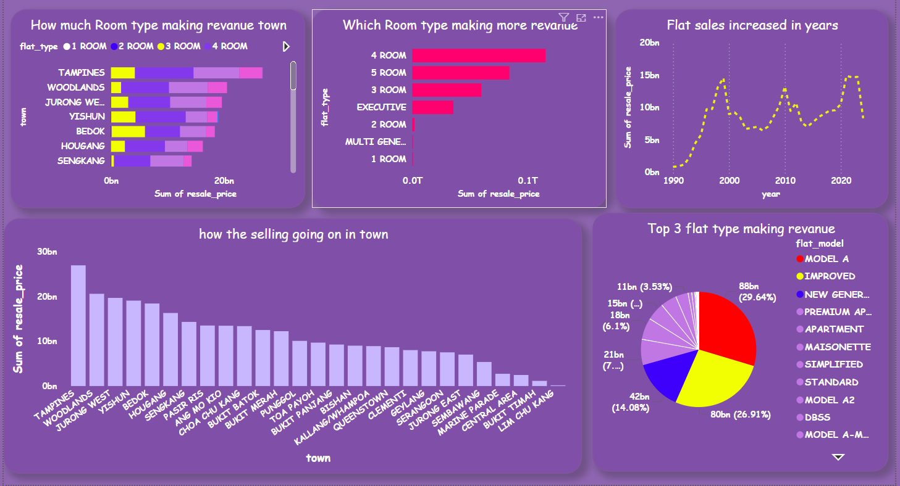

This project is a web application designed to predict resale flat prices in Singapore. The application leverages advanced machine learning models to provide accurate predictions based on user inputs.
git clone https://github.com/yourusername/singapore-resale-flat-price-prediction.git
cd singapore-resale-flat-price-prediction
pip install -r requirements.txt
Download the pre-trained models and encoders and place them in the project directory:
streamlit run app.py
Open your web browser and go to http://localhost:8501 to access the application.
The application uses the ExtraTreesRegressor model for prediction. The data preprocessing steps include encoding categorical variables and scaling numerical features.
Analysis of Singapore resale flat prices using Power BI. This dashboard provides comprehensive insights into the real estate market trends, price distributions, and key factors affecting resale prices. It features interactive visualizations, including trend analysis, geographical breakdowns, and comparisons across different flat types and towns.
Contributions are welcome! Please open an issue or submit a pull request for any improvements or bug fixes.
Created by Naveen Anandhan - feel free to contact me!
Inspired by the real estate market trends in Singapore.
Special thanks to the open-source community for the tools and libraries used in this project.